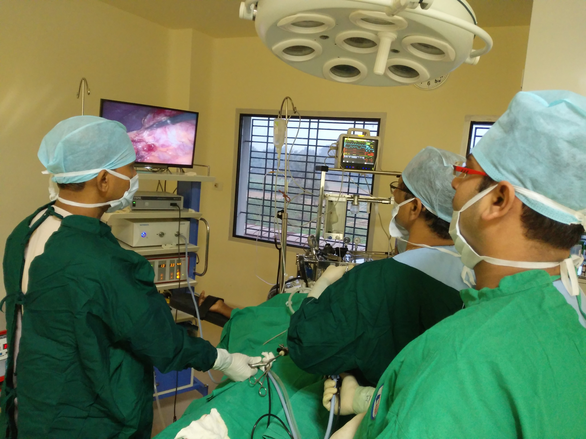
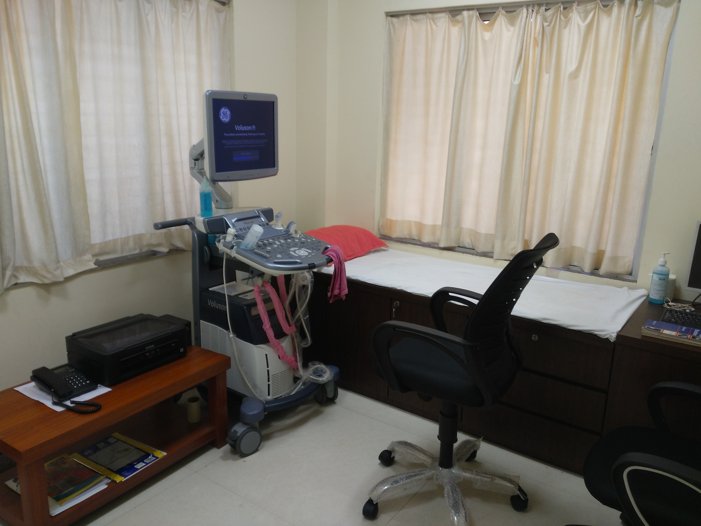
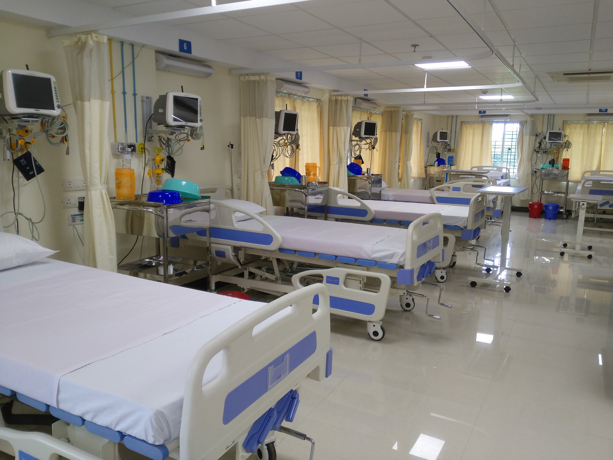
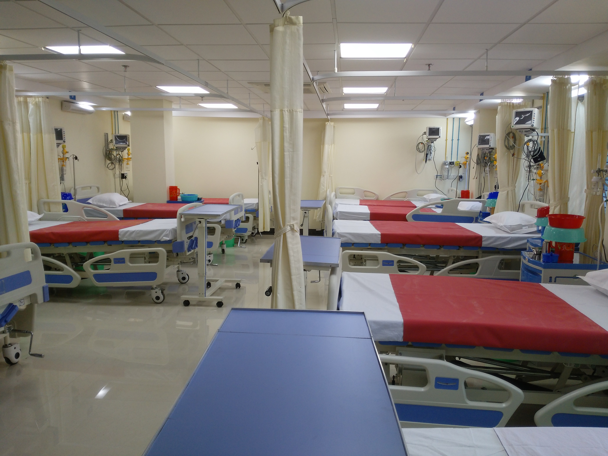
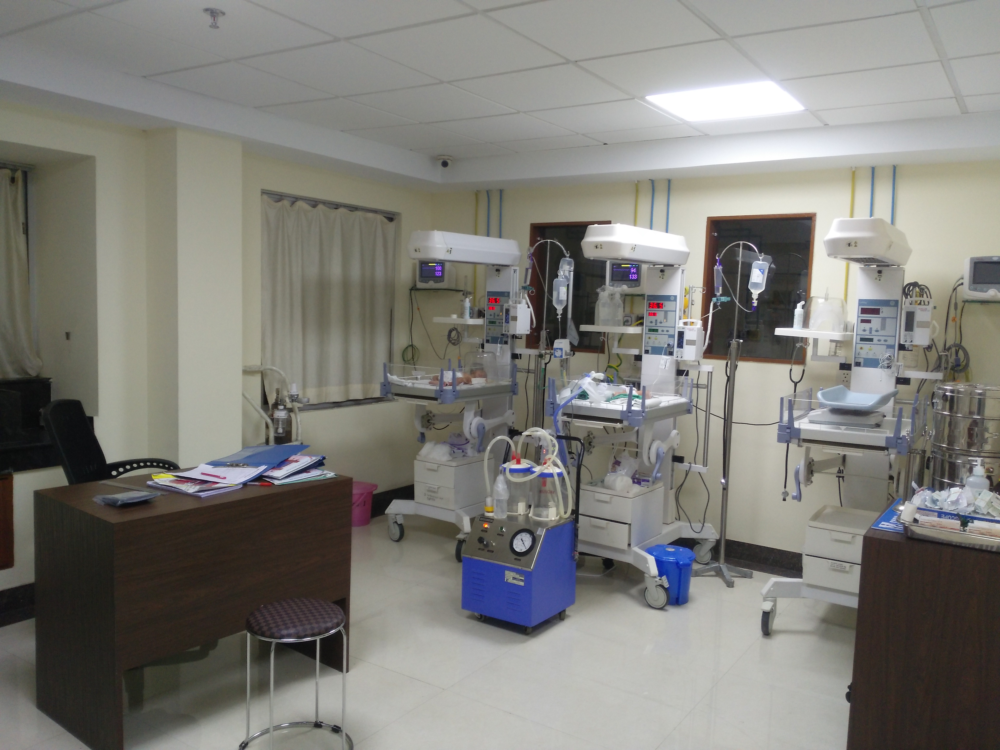
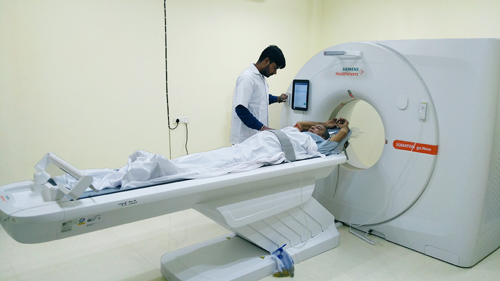

OT
We have 4 ultramodern operation theatre in our hospital with well-trained OT Assistants & nurses to serve pain less services to patient.

PHARMACY
We have our own pharmacy department under one roof available with 24×7 medicines supply to Indore & outdoor patients

USG
We are provide Ultrasound (USG) service under one roof in our hospital by world class USG machine. We have registered USG technicians and well experienced Radiologist.

X-ray
We provide X-ray service under one roof by world class machines. We have well trained & certified x-ray technicians to provide 24/7 service.

Intensive Care Unit (ICU)
We have Intensive Care Unit (ICU) for critical & unconscious patient to give high priority treatment. Well trained nurses, technicians & our residential medical officers give their best service & follow the instruction by MD Physicians.

High Dependency Unit (HDU)
We have also add High Dependency Unit (HDU) with ICU. We have transfer the patients who recover from ICU & give conservative treatment by our medical officers & MD Physicians.

Neonatal Care Unit (NICU)
We have Neonatal Care Unit (NICU) for new born immature or
serious critical baby’s. Here also give the best service our NICU specialist nurses,
Medical Officers & Neonatologist Physician.

PATHOLOGY
We have fully computerized pathology department with well experienced technicians & reputed doctors to provide service 24/7 for patient.

CT SCAN
We provide CT scan services under one roof with world class CT scan machines. We have well trained & cirtified CT scan technicians to provide 24×7 service. We also provide all types of CT scan services like non contrast, contrast, high resolution, CT guided FNAC and all type of CT angiogram.